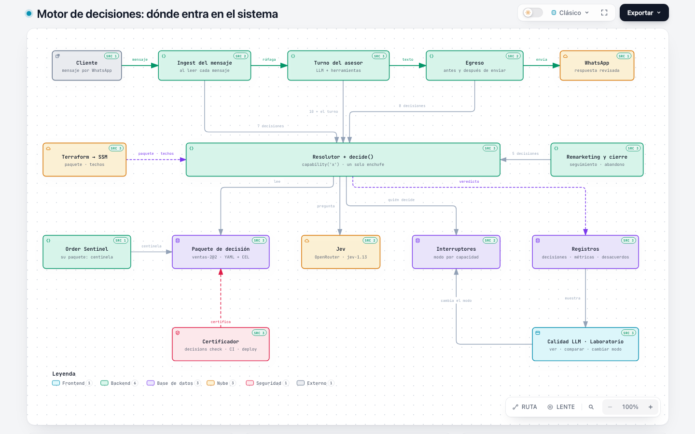
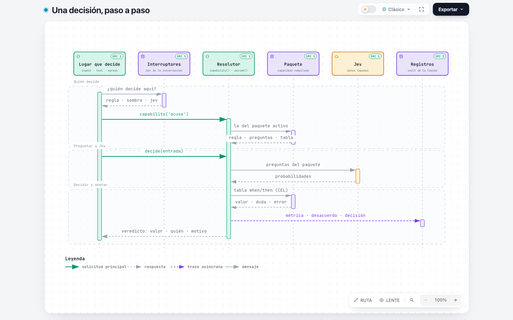
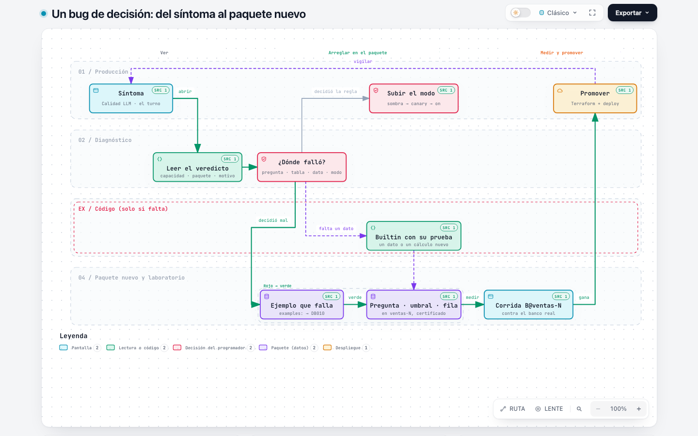

AgencyHubara · motor de decisiones · guía para programarlo
El motor de decisiones
El asesor (un LLM) conversa. Las decisiones con consecuencias —¿el cliente confirmó la compra?, ¿pidió la baja?, ¿este texto es para él o es una nota interna?, ¿la ciudad es Bogotá o nacional?— las toma un motor genérico que lee un paquete de decisión: datos versionados y certificados, uno por tienda. Esta guía explica dónde entra, cómo decide, qué cambió frente a main y, sobre todo, cómo se programa ahora una mejora o se arregla un bug de decisiones sin volver a regar código.
La regla de oro. Un bug de decisión se arregla en el paquete: otra pregunta, otro umbral, otra fila de la tabla o un ejemplo nuevo, en una versión nueva del paquete. Nunca con un if, un regex o una guarda nueva en el lugar que decide. Código solo cuando al motor le falta algo genérico (un dato, un cálculo) y entonces va a un builtin con su prueba, nunca a varios archivos.
Las cuatro capas
El motor separa lo que cambia seguido (qué preguntar, con qué certeza, qué decidir) de lo que cambia poco (cómo se evalúa, cómo se le pregunta a Jev, qué se registra). Arriba está lo que se edita para arreglar o mejorar una decisión; abajo, el código que casi nunca se toca.
hubara_agency/src/plugins/chats/shared/decisions/bundles/. El Order Sentinel tiene su propio catálogo y su paquete (centinela) sobre el mismo motor.L1 · Motor (código, igual para toda tienda)
Compila el YAML, evalúa las condiciones en CEL con tipos, le pregunta a Jev, aplica los pisos de seguridad y registra cada veredicto. Vive en src/platform/decisions/ (fachada src.sdk.decisionkit) y en el enchufe de ventas decide().
L2 · Catálogo (el contrato)
builtins.yaml declara qué puede pedir un paquete: los builtins con su firma, las capacidades que el código pide (capabilities:), las reglas y pisos obligatorios, el vocabulario del turno, los lugares (places:) y qué resuelve cada decisión (about:).
L3 · Paquete de decisión (dato)
Una carpeta por tienda y versión (ventas, ventas-2). Un YAML por capacidad: la pregunta a Jev, los umbrales, la tabla when/then, la regla de respaldo, el piso y los ejemplos que deben cumplirse. Además turn.yaml: lo que Jev lee antes del turno, el contrato asunto → tools y la verificación antes de enviar.
L4 · Dominio de la tienda (dato)
domain.yaml: el nombre, la despedida aprobada y los ejemplos que el asesor ve en sus herramientas («'lavanda', 'el morado'»). Una tienda nueva escribe esto en vez de cambiar textos en el código.
Dónde entra en el sistema
Cada parte del software que necesita decidir pide la decisión por nombre al mismo resolutor: capability("baja"). El resolutor la toma del paquete que eligió Terraform para la tienda, consulta quién decide en esta conversación y, si toca, le pregunta a Jev. Ningún lugar lleva la lógica adentro. El diagrama interactivo cita cada caja a su código (botón SRC) y trae vistas guiadas para las cuatro preguntas.

| Parte del software | Decisiones que pide | Dónde se piden |
|---|---|---|
| Al leer cada mensaje del cliente | compra, retoma, baja, cortesía, acuse, cupón, fuera del catálogo | decisions/readings.py (desde el ingest) |
| Antes de que el bot responda | cantidad · y el turno de Jev: la ráfaga ①, el contrato asunto → tools y la verificación ③ | activities/build_prompt_stage.py, decisions/engine.py + turn.yaml |
| Dentro de las herramientas | categoría, color pedido, producto del pedido, datos de envío, zona de envío, botones para elegir, precios cotizados, no parecer un bot, para quién es (oración por oración) | tools/*.py y decisions/guards.py |
| Antes de enviar la respuesta | muletilla del modelo, para quién es el texto, rescate del texto, portavelas, bienvenida, lista de opciones, colega prometido | decisions/egress.py, decisions/guards.py, activities/variant_enumeration_guard.py |
| Después de enviar | afirmación sin consultar (por ahora solo mide) | activities/turn_trace.py |
| Mensajes de seguimiento | escribirle de nuevo, producto del que habló, para quién es (en una plantilla), fuera del catálogo | decisions/remarketing_context.py, decisions/contact.py |
| Al cerrar una conversación abandonada | etiqueta de cierre | decisions/cierre.py |
| Order Sentinel (otro plugin) | qué cambió en el pedido, evidencia del cambio | order_sentinel/…/use_cases/readings.py con su paquete centinela |
Rutas relativas a hubara_agency/src/plugins/chats/agent/sales/. La misma lista, con lo que resuelve cada decisión en español llano, está en Agents → Calidad LLM → Motor de decisiones: sale de builtins.yaml: places/about, así que no se desactualiza.
Cómo decide una capacidad
Una capacidad es una decisión con nombre: acuse responde «¿este mensaje solo le acusa recibo a la despedida?». Así se ve completa (es el archivo real de ventas):
capability: acuse
value: bool
input: Inbound
rule: {builtin: closing_ack} # la regla de hoy: decide si Jev no está, duda o falla
state: {builtin: message_after_close} # lo que ve Jev (con los datos personales tapados)
questions:
- id: acuse.solo_cortesia
kind: noul # sí/no → probabilidad p
text: "¿Este mensaje del cliente es solo un acuse de recibo o una cortesía a la despedida …?"
criteria: {"true": "sí", "false": "no"}
thresholds: {"absorb": 0.9}
decide: # en orden: la primera fila que se cumple decide
- when: "!('acuse.solo_cortesia' in p)"
then: doubt # Jev no contestó: decide la regla
- when: "p['acuse.solo_cortesia'] >= th['absorb']"
then: true
- otherwise: false
floor: {builtin: jev_without_question_mark} # piso: un mensaje con «?» nunca se absorbe
same: {builtin: bool_eq}
examples: # el certificador los corre: son las pruebas del YAML
- {answers: {acuse.solo_cortesia: 0.9}, expect: true}
- {answers: {acuse.solo_cortesia: 0.89}, expect: false}
- {answers: {}, expect: doubt}En CEL la tabla lee p (probabilidad de cada pregunta sí/no), choice y conf (preguntas de opciones), th (umbrales), rule (lo que dijo la regla), inp (la entrada), vars, consts, opt (opciones armadas desde la entrada), items (cuando decide parte por parte) y dom (el dominio). El certificador (decisions check) rechaza el paquete si una llave no existe, si una condición compara un número con un texto, si una fila nunca se alcanza o si un ejemplo no da lo esperado: DB001–DB016.

El veredicto: lo que se mira primero en un bug
Cada decisión devuelve un Verdict y, si Jev participó, queda en <vault>/<sesión>/evals/decisions.jsonl y se ve en Calidad LLM → Conversaciones → el turno → «Decisiones de Jev».
| Campo | Qué dice |
|---|---|
value | Lo que se decidió (lo que usa el lugar). |
by | reglas (la regla de hoy) · jev · piso (el piso cambió lo de Jev) · respaldo (Jev debía decidir pero no pudo). |
provider | El modo en esta conversación: reglas, sombra o jev. |
reason | Por qué decidió la regla: duda, bundle_error, no_question, timeout, http_…, model_changed, unknown_profile. |
rule · jev · agree | Lo que dijo cada uno y si coincidieron. Un desacuerdo va a la cola que califica Claude Code. |
answers | Lo que contestó Jev a cada pregunta (p, choice, confidence): es la entrada exacta para el ejemplo que reproduce el bug. |
bundle | id@versión del paquete que decidió (por ejemplo ventas-2@2). |
Quién decide hoy: los modos
Cada capacidad tiene su interruptor, guardado en el vault de la tienda y movido desde Agents (panel «Motor de decisiones»). El modo efectivo nunca pasa del techo que fija Terraform. Una capacidad nueva o cambiada empieza en sombra: decide la regla de hoy y Jev se pregunta igual, así se mide sin riesgo.
decisions/capability_rollout.py. Una variante (control: destinatario) comparte el interruptor de su decisión.Qué cambió en la arquitectura
En main (producción hoy) no existe la carpeta decisions/: cada decisión es código dentro del lugar que la toma —un regex en el ingest, una guarda en una tool, un umbral fijo, una frase en el prompt—. Arreglar una decisión es tocar varios archivos y desplegar. En la rama del PR #372 los lugares piden la decisión al motor y lo que decide vive en el paquete.
rule: de cada capacidad) que deciden en modo off, en sombra y cuando Jev duda o falla, y como pisos que nada puede quitar.Lo que costaba un arreglo en main
| Arreglo en main | Lo que tocó | Con el motor |
|---|---|---|
| #371 · el cupo del cupón y la guarda de enumeración | 9 archivos de código (tools, use cases, composition, ingest, guardas) | Lo que es decisión («¿habla del cupón?», «¿enumera variantes?») son las capacidades cupon y enumeracion: preguntas y filas en el paquete. El cálculo del cupo sigue siendo un hecho del dominio, en un solo lugar. |
| #376 · decir que no existe lo que piden fuera del catálogo | 6 archivos (código de ventas y remarketing, workflow y el prompt SOUL.md) | «¿Lo que pide existe?» es la capacidad fuera_de_catalogo (en el ingest y en remarketing, la misma). Qué le dice el bot va en la guía del turno o en el dominio. |
| #379 · un acuse tras la despedida no reabre la conversación | 2 archivos (un use case nuevo y el ingest) | Es la capacidad acuse (arriba, completa): otro umbral u otra redacción es una versión nueva del paquete. |
Antes y después, en una tabla
| Tema | Antes (main) | Ahora |
|---|---|---|
| Dónde vive una decisión | En el lugar que la toma, mezclada con su código | En el paquete; el lugar la pide por nombre |
| Cambiar una pregunta o un umbral | Editar código y desplegar | Versión nueva del paquete, certificada; Terraform la elige |
| Saber con qué se decidió | No quedaba registro | El veredicto lleva paquete, respuestas de Jev, regla y motivo |
| Probar antes de producción | Pruebas unitarias del código | examples: certificados + laboratorio B@paquete + sombra en producción |
| Otra tienda (zapatos) | Reemplazar textos de velas en el código (forge) | Otra carpeta de paquete y otro domain.yaml |
| Volver atrás | Revertir código | El id anterior en Terraform, apply y redeploy |
El dominio, palabra por palabra
| Palabra | Qué es | Dónde vive |
|---|---|---|
| Capacidad | Una decisión con nombre y tipo de valor (bool, una etiqueta, {cantidad: int?}, una lista). | capabilities/<nombre>.yaml dato |
| Paquete | Todas las capacidades de una tienda, más su turno y su dominio. Inmutable: otro texto u otro umbral es otra versión (ventas-2@2). | bundles/<id>/bundle.yaml dato |
| Catálogo | El contrato entre motor y paquetes: builtins, capacidades exigidas, reglas y pisos fijos, lugares y about. | bundles/builtins.yaml contrato |
| Builtin | Código con nombre que un paquete puede pedir: regla, estado (lo que ve Jev), opciones, vista, ítems, piso o comparador. | decisions/bundled*.py código |
| Regla de hoy | El builtin que decide sin Jev (modo off, sombra, duda o falla). | rule: de la capacidad |
| Pregunta | Lo que se le pregunta a Jev: sí/no (noul → p) o de opciones (choice), con sus criterios. Es el prompting de la decisión. | questions: / each: |
| Umbral | La certeza que exige una fila (th['absorb'] = 0.9). | thresholds: |
| Tabla | Filas when/then en CEL; la primera que se cumple decide; doubt = decide la regla. | decide: |
| Piso | Lo que nunca se quita, aunque Jev diga otra cosa (la baja legal, el relevo, «un mensaje con ? nunca se absorbe»). | floor: · required_floors |
| Ejemplo | Respuestas de Jev → valor esperado. El certificador los corre; son la prueba roja/verde del YAML. | examples: |
| Veredicto | El resultado de una decisión con todo su porqué (ver §03). | decisions.jsonl por conversación |
| Modo y techo | Quién decide (off · sombra · canary · on) y el máximo que permite Terraform. | vault + SALES_CAPABILITIES_CEILING |
| Jev y su perfil | El modelo pequeño que contesta las preguntas (oráculo jev-1.13, vía OpenRouter). El perfil del turno (jev-v5) dice qué cuestionario usa. | bundle.yaml: oracle, profiles.yaml |
| Turno ① ② ③ | ① Jev lee la ráfaga: qué asuntos plantea el cliente. ② Qué tool atiende cada asunto (el contrato). ③ Antes de enviar, si la respuesta atiende cada asunto. | turn.yaml dato |
| Dominio de la tienda | Nombre, despedida y vocabulario que ve el asesor. | domain.yaml dato |
Un bug de decisión: el bucle
Cuando en producción una decisión sale mal (el bot reabre una conversación cerrada, guarda un dato que el cliente no dio, cobra la zona equivocada), el arreglo sigue siempre el mismo camino. Lo que cambia es dónde cae el arreglo (ver §08), nunca la regla de oro.

- Ver el síntoma con su turno. Agents → Calidad LLM → Conversaciones → la conversación → el turno. La ventana del turno muestra el paso a paso y «Decisiones de Jev». Si no hay decisión de Jev en ese turno, la decidió la regla de hoy (modo off) o no es un problema de decisión (ver §08, última fila).
- Leer el veredicto. Capacidad,
bundle,by,reason,rulevsjevyanswers. Con eso ya se sabe si falló la pregunta (Jev entendió mal), la tabla o el umbral (Jev entendió bien y se decidió mal), un dato de entrada o el modo. - Rojo: escribir el caso como ejemplo. En
capabilities/<capacidad>.yamlde una copia nueva del paquete, agregar aexamples:lasanswersdel veredicto (anonimizadas) con el valor correcto enexpect.decisions checkdaDB010. Si lo que falló es que Jev entendió mal, el ejemplo no lo puede probar (le da las respuestas directo a la tabla): ahí la prueba es la corrida del laboratorio del paso 5 y, en producción, la sombra. - Verde: el cambio mínimo en el paquete. Otra redacción de la pregunta o de sus criterios, otro umbral, otra fila o el orden de las filas.
decisions checken verde. El paquete nuevo lleva suid(la carpeta) y suversion, su huella entests/plugins/test_decision_bundles_published.pyy una prueba que diga que es el anterior con ese cambio y nada más (comotest_decisions_ventas_2.py). Un experimento de esta tienda va endeletesdeforge/manifest.yaml. - Medir en el laboratorio. Commit, y en el laboratorio «Nueva corrida» → «Paquete a comparar: ventas-N». Corre
B@ventas-Ncontra el banco de conversaciones reales y el resumen muestra la diferenciaB → B@ventas-N, con las decisiones de Jev por turno. - Promover. Con el paquete ya desplegado en la imagen:
tenants.<t>.lab.decisions_bundle = "ventas-N"eninfra/terraform/platform/tenants.auto.tfvars,terraform applyde platform (el operador) y dispatch de Backend deploy. Al arrancar, la API y los workers registrandecisions.bundle_readycon elid@versión. Volver atrás = el id anterior. - Vigilar. Calidad LLM → Motor de decisiones muestra la versión que corre y el modo de cada decisión; Conversaciones muestra las decisiones turno por turno; la cola de desacuerdos y las métricas dicen si Jev gana. Ojo: el modo es de la capacidad, no de la versión del paquete. Si la capacidad estaba encendida, el cambio actúa apenas entra el paquete; para medirlo antes, bájala a sombra y vuelve a subirla con la vara.
¿Dónde va el arreglo?
Se diagnostica con el veredicto, no con intuición. La columna de la derecha es lo que no se hace: el camino de main.
| Lo que muestra el veredicto | Qué falló | Dónde se arregla | Lo que no se hace |
|---|---|---|---|
by=jev, Jev contestó seguro, pero lo contrario de lo correcto | La pregunta o sus criterios son ambiguos (Jev entendió otra cosa) | text / criteria / opciones de la pregunta, en una versión nueva; se mide en el laboratorio y en sombra | Un regex o una lista de palabras en el lugar |
by=jev, Jev contestó bien (p = 0,82) pero el umbral pedía 0,85 | Umbral o fila | thresholds / decide, con ejemplos en el borde (0,84 · 0,85 · 0,86) | Cambiar el umbral en el código o en el perfil |
reason=duda muy seguido | Banda de duda muy ancha o una pregunta que mezcla dos cosas | Partir la pregunta en dos, ajustar la tabla | Forzar la decisión con un if |
reason=bundle_error | La tabla falla al evaluarse (lee una respuesta que no llegó, un tipo equivocado) | Fila !('x' in p) → doubt primero; ejemplo que lo cubra | Atrapar la excepción en el lugar |
reason=no_question o falta un dato en lo que ve Jev | La entrada no trae lo que la pregunta necesita | Un builtin de estado, vista u opciones (código genérico, con su prueba y su entrada en el catálogo) | Armar el texto para Jev dentro de una tool |
by=reglas con provider=reglas o sombra | Decidió la regla de hoy: no es un bug de Jev | Si Jev acierta en sombra, subir el modo con la vara; si la capacidad seguirá apagada, corregir el builtin de la regla | Tocar el paquete para «arreglar» a Jev |
by=piso | El piso cambió lo que dijo Jev, a propósito (la baja legal, el relevo) | Casi nunca es bug. Los pisos obligatorios no se cambian (DB012) | Quitar el piso desde el paquete |
reason=timeout, http_…, model_changed | Jev no contestó o OpenRouter sirvió otro modelo | Infraestructura y perfil del oráculo (espera, modelo calibrado); la sonda diaria lo vigila | Bajar umbrales para compensar |
| Hace falta una decisión que no existe | Capacidad nueva | Catálogo (capabilities + about con su lugar) + YAML con ejemplos + un lugar que la pide con capability("x"); nace en off y pasa por sombra | Una función nueva en el lugar |
| El bot dijo algo mal sin que ninguna decisión fallara | No es una decisión: es lo que el asesor redacta | La guía del turno (turn.yaml: guide, los nudge del contrato) o el dominio (domain.yaml); el prompt base del asesor (workspace/SOUL.md) solo si es de la conducta general | Una guarda que reescriba el texto |
| Un hecho está mal (precio, cupo, stock, envío, etapa del pedido) | No es una decisión: es un dato verificado | Donde vive el dato, una sola vez (catálogo, OrderFacts, cupón): lo verificado manda | Pedirle a Jev que adivine un hecho |
Mejorar el motor mismo
A veces el paquete no alcanza porque al motor le falta una pieza genérica. Entonces sí es código, pero en un solo sitio y con TDD:
- Un builtin nuevo (un dato que la entrada no trae, un cálculo que CEL no hace): la función, su entrada en
builtins.yamlcon su firma y su prueba.test_the_catalog_and_the_code_declare_the_same_builtinsexige que coincidan. Si arrastra Temporal, el ingest o el catálogo, va enbundled_ingest.py/bundled_catalog.py/bundled_egress.pyy se registra enLAZY_BUILTINS. - Algo nuevo en el formato del paquete (un tipo de pregunta, una variable de CEL): en
src/platform/decisions/con sus pruebas entests/platform/decisions/y su código del certificador. Si cambia lo que significa un paquete, subeengine_contract; el contrato viejo sigue enSUPPORTED_CONTRACTS(un paquete publicado nunca deja de correr). - Migrar comportamiento vivo que todavía es código: primero la paridad (una foto del comportamiento de antes) y después el YAML que la iguala; la foto no se regenera con el código nuevo.
- Un plugin nuevo con decisiones: su propio catálogo junto a sus paquetes (
**/decisions/bundles/<id>/),load_bundledesdesrc.sdk.decisionkit, como el Order Sentinel.
Lo que sigue en código y está pendiente de pasar al paquete: los campos aroma, color y diseño del pedido, la cédula y el barrio, las zonas de envío de Colombia, las frases del piso de persona y la redacción general de la guía de etapas.
Lo que ya no se hace
- Un
if, un regex o una guarda nueva en el lugar que decide para corregir una decisión. - Nombrar una clase de capacidad (
Baja()) o importarla: se pidecapability("baja"). Dos pruebas lo frenan. - Editar una versión publicada del paquete: su huella sha256 está congelada en una prueba.
- Borrar un paquete que SSM nombra o que un rollback puede pedir.
- Escribir un piso en el YAML o cambiar la regla de la baja legal o del relevo (DB012).
- Poner un ejemplo de la tienda («el Velón de Cristo») en el código de una tool: va en
domain.yaml: vocabulary. - Cargar paquetes dentro del código de un workflow (R-DET): solo en el ingest, las tools y las activities.
- Importar
src.platform.decisionsdesde un plugin: se usasrc.sdk.decisionkit. - Regenerar una foto de paridad con el código nuevo (la vuelve tautológica).
- Dejar
coverage: {}pensando que «no se juzga»: es una regla que nunca se cumple y pide otra ronda del LLM.
Comandos y archivos
# certificar todos los paquetes (CI y el deploy lo vuelven a correr)
cd hubara_agency && uv run python -m src.sdk.cli decisions check
# esquema para que el editor autocomplete los YAML
cd hubara_agency && uv run python -m src.sdk.cli decisions schema
# pruebas del motor y de las decisiones de ventas
cd hubara_agency && uv run pytest -q tests/platform/decisions tests/plugins/chats/sales/decisions
# la cola de desacuerdos (en un worker de producción, por SSM; responder escribe en el vault: pedir OK)
python scripts/decisions_queue.py resumen
python scripts/decisions_queue.py siguiente --max-chars 20000 --capacidad acuse
python scripts/decisions_queue.py puntaje| Para | Archivo |
|---|---|
| Diseño completo y reglas de quien escribe paquetes | PAQUETES_DE_DECISION.md (§12 y §13) |
| El kit para plugins | docs/_sdk/17-decisionkit.md |
| La referencia que leen los agentes | hubara-dev/skills/hubara-plugin-developer/references/06-decision-bundles.md |
| Los paquetes de ventas y su catálogo | hubara_agency/src/plugins/chats/shared/decisions/bundles/ |
El enchufe decide() y el veredicto | …/sales/decisions/capabilities/__init__.py |
| El resolutor y el paquete activo | …/sales/decisions/registry.py, chats/shared/store_pack.py |
| Modos y la vara | …/sales/decisions/bots.py, capability_rollout.py |
| Motor genérico y certificador | hubara_agency/src/platform/decisions/ |
| Fuentes de los diagramas de archify | docs/motor-de-decisiones/fuentes/*.archify.json |